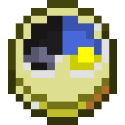
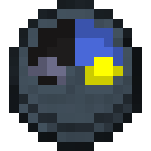
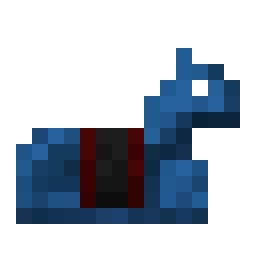
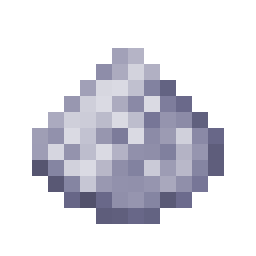
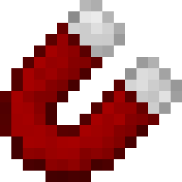
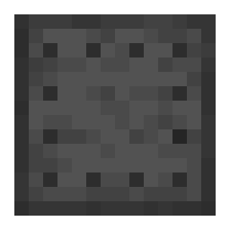
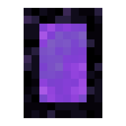
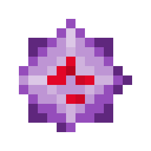
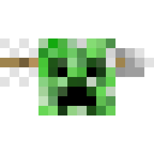
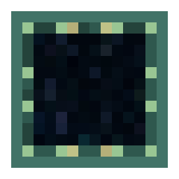

Better Wandering Trader
1.15 +
With this Data Pack you'll get a lot of small useful things that you can trade with Wandering Traders. These items are all available only through him.
The Wandering Trader will also become a neutral mob. This means that if you provoke him, he will attack you.
But this is not the only punishment for attacking him. The harder one is that you'll need to wait much longer for a new Wandering Trader to spawn.
The items you can trade with him are split into three rarity degrees. The common items have a yellow name, the rare ones have a blue one and the epic ones have a purple one.
In the inventory of the Trader the first four trades are common, the next two rare and the last one is epic.
The entire spawning system of the Wandering Trader has also been reworked. Now, a Wandering Trader spawns every five days at random player who hasn't hit a Trader in the last five days. After two days, the Trader despawns again.
If you play on a server or a weak PC, please check first if the Nether and the End Gate place and remove the blocks correctly. If they don't place a 3x3 platform in the end or in the nether underneath you, you should disable these trades!
Common Trades
Death Coords |
|
|  | Toggle Day Time |
|  | Toggle Weather |
|  | Horse Upgrade: Health |
Horse Upgrade: Speed |
|
Horse Upgrade: Jump Strength |
|
|  | Bone Dust |
Vanilla Minecraft Trades:
Kelp
Rare Trades
XP Cost Reducer |
|
|  | Item Magnet |
|  | Anvil Repair |
|  | Nether Gate |
Vanilla Minecraft Trades:
Bamboo
Slimeball
Epic Trades
|  | Spawner Breaker |
|  | Creeper Disruptor |
|  | End Gate |
Vanilla Minecraft Trades:
Turtle Egg
Settings
Disable custom spawning. Afterward the Wandering Trader will spawn like normal, but he will still have the custom trades.
/scoreboard players set #spawn_normal usftrader 1/reload
Disable trades. Replace #id with the small written ID that is next to the name of the item in the Trades spoiler.
/scoreboard players set #id usftrader 1
Disable the disrupting sound of the Creeper Disruptor.
/scoreboard players set #disruptor_sound usftrader 1
To enable the setting again you need to execute the same command except of the 1 replace with a 0.